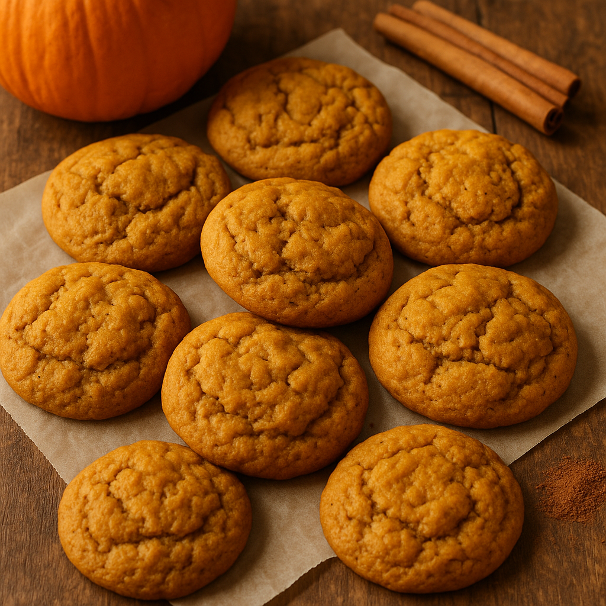

Pumpkin Cookies

Description
These cookies are perfect for the fall season. The recipe comes from Cooking with Karli and is a favorite in our household.
These cookies are soft and simular to Crumbl Cookies Choclate Chip Cookie.
Ingredients
- 3/4 of cup Oil
- 1 3/4 of cup Granulated Sugar
- 1 1/2 tbsp of Vanilla
- 1 1/2 cups of Pumpkin
- 2 Eggs
- 2 3/4 cups of Flour
- 3 tsp of Baking Powder
- 1 tsp of Baking Soda
- 1 1/2 tsp of salt
- 3 tsp of Cinnamon
- 2 cups of Semi-sweet Chocolate Chips
Recipe
- preheat oven to 375
- whisk together the oil, sugar, pumpkin, and eggs.
- add dry ingredients and stir until completely mixed.
- Fold in chocolate chips.
- NOTE: cookie dough will have texture of a thick batter.
- Scoop out 1/2 cup of cookie dough and spoon onto a silicone lined cookie sheet.
- Bake at 375 degree for 15-17 minutes.
- Let cool for 15-20 minutes then transfer to plate.